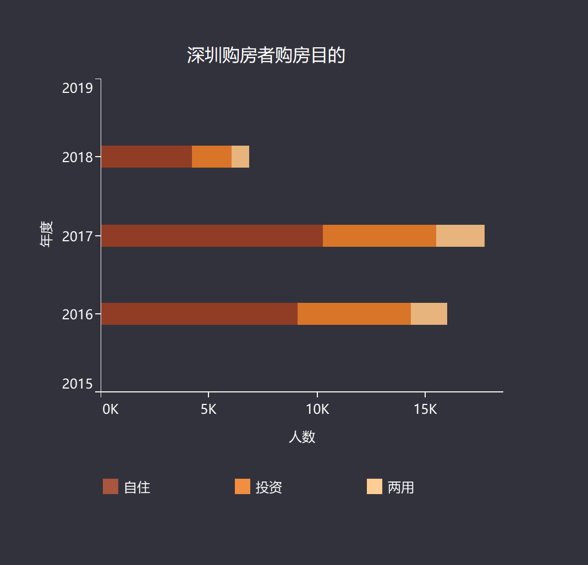

“他们，像一群候鸟，白天飞向事业，夜晚飞回居所。”
从明清时的广州府，到2019年初落地的粤港澳大湾区，珠三角湾区文化一脉相承、城市一衣带水、彼此相连。
珠江东岸，“深莞惠”三城已形成了一个自然的经济圈。这里，拥有接近2500万人口，总面积约1.6万平方公里，GDP突破3万亿元，已成为粤港澳大湾区内经济实力最强、人口流动活力高、区域经济一体化发展最快的核心引擎之一。
以高新技术、金融、物流、文化为支柱产业的深圳，宛若大湾区中的大脑；惠州、东莞制造业基础雄厚，三地之间分工明确，优势互补。不管是深莞惠一体化发展规划的利好，还是产业、交通的推进，都强化了这三地的“同城效应”。
住在惠州淡水星河丹堤的Wilson（化名），为了在深圳坂田的工作，每天在深惠两地高铁来回。孙先生（化名）家住惠州龙光城，深惠跨市巴士公交成了这位新居民去往深圳南山工作的选择，但一个多小时的车程总让他每天早起晚归。安先生(化名)家住东莞塘厦，作为有车一族，他每天花半小时开车去深圳龙华的公司上班，比起Wilson和孙先生来说路途更加舒适了。在城市化高速发展的浪潮之下，深莞惠的城市界限已渐渐模糊化，无论是像Wilson还是孙先生这样的公交通勤族，还是安先生这样的车主，都在事业和住所的两全之间形成了一种特殊的生活方式。

Maecenas a gravida quam
Etiam posuat, ermentum iaculis, nunc justo dictum dui, non aliquet erat nibh non ex.